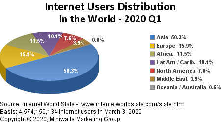

The world is digital and we are living in the information age which is full of data and information. Our smartphones, personal computers to the computers being used in big industries all have evolved rapidly that we are taking it for granted. Let me ask a question to you. Are you using technology or is it using you ? Don't worry if technology is using you because here i have brought you a small article to learn personal computing history and how it is evolving. According to internet world stats, the total internet user in 2020 from world is as shown below and rapidly increasing which is interesting to know.
As we can see, coming in 2020 every internet users in the world is using the computer to access it. Beside internet computer are being used in many other purposes and there are still lots of places where internet is not accessible and still computers are being used for various other purposes. Technology has always been there since the human evolution in the different forms and different tools making everyone life easy. If you want to learn more about the history of computer hardware checkout this wikipedia provided below otherwise let carry on with history of information technology.
It is the earliest age of information technology in the time between 3000B.C. and 1450A.D. Beginning of human evolution and people used to write in rock, clays and try to communicate. Pre-mechanical period is commonly believed to have existed from the dawn of written history until about the middle of the 15th century.
In those age alphabets started and thus more people started using notes. pens and paper began to evolve. The Sumerians in Mesopotamia devised uniform, Phoenicians created symbols, Greeks later adopted the Phoenician alphabet and added vowels, the Romans gave the letters Latin names to create the alphabet we use today and many more. Now data have been created people needed somewhere to store and made book stores and libraries.
The Mechanical age was between 1450 and 1840, when the the machines being started to perform the desired tasks. Inventors began to use techniques and tools to create machines that will perform some tasks based on its input. Mathematics has evolved so much in this era which leads to the invention of slide rule which was an analog computer used for multiplying and dividing.
Many others inventors like Blaise Pascal created the Pascaline, a very common mechanical computer. Charles Babbage built a difference engine that tabulated polynomial equations using a finite difference method. Gottfried Leibniz invented the binary system, foundation of all modern computer architectures. The first computer programmer, Lady Ada Augusta Lovelace Byron was the first to recognise that the machine had applications beyond pure calculation and wrote the first algorithm to be carried out by such a machine.
The electromechanical was the time between 1840 and 1940 when ways to harness electricity began. These are the beginnings of telecommunication. Alessandro Volta invented the voltaic pile which is the first stored electricity. Alexander Graham Bell in 1876 invented the telephone which went on to became the most popular forms of communication ever. The first radio developed by Guglielmo Marconi in 1894.
The first large-scale automatic digital computer Mark 1 was created by Harvard University around 1940. These were all highly important new innovations that contributed to significant developments in the area of information technology.
The electronic age is the period between 1940 and now. ENIAC was the first high-speed, digital computer capable of being programmed to solve a wide range of computing problems. This computer was designed to be used by the United States army. This computer was much larger than the Mark 1 .
At first vacuum tubes, punch cards, rotating magnetic drums were used for internal storage. They got replaced vacuum tubes with transistors, punch cards were replaced with magnetic tape, and rotating magnetic drums were replaced by magnetic cores. The third generation replaced transistors with integrated circuits, magnetic tape was used on all computers, and the magnetic core was transformed into metal oxide semiconductors. The fourth and latest generation brought in CPUs (central processing units) which contained memory, logic, and control circuits all on a single chip.
Apple and Microsoft operating system showed up around this time along with the advanced programming language BASIC . In programming high-level programming languages were created such as FORTRAN and COBOL.
INTERNET was developed by the Department of Defense in the 1970s. In the case of a threat, the military advisors proposed the benefit of being able to run one device from another screen. Different ways of contact have been added. ELECTRONIC MAIL, or EMAIL, was a simple way to deliver a letter to your colleagues or relatives.
Messages may be submitted and received at the convenience of every person. Banking, bills, and shopping had been made easy and gave ability to connect billions of computers and devices to each other. With the introduction of web and mobile apps information became everywhere and anyone could now develop and invent anything they like.
Ishwor Khadka | Jun 18, 2020